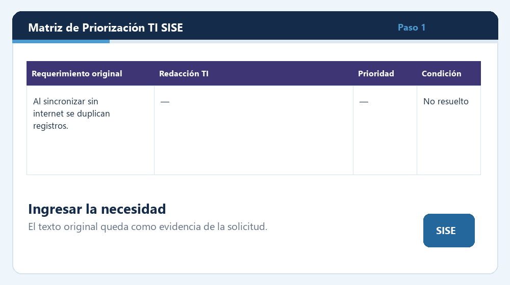

Necesidad original
El área usuaria describe el problema y conserva su formulación como antecedente.
Propuesta para jefatura y gestión presupuestaria
La matriz ordena el ingreso, la evaluación, la priorización, la estimación y el seguimiento de los requerimientos SISE. La fórmula apoya la conversación; la decisión continúa siendo humana.
El mecanismo
La matriz funciona como expediente resumido de decisión y evita que presupuesto reciba solicitudes sin contexto técnico suficiente.
El área usuaria describe el problema y conserva su formulación como antecedente.
Un redactor local reconoce patrones y propone una formulación dirigida al equipo técnico o proveedor.
Impacto, urgencia, riesgo, datos, seguridad, cumplimiento, alcance, confianza y esfuerzo.
La cartera se ordena y jefatura valida prioridades, excepciones y oportunidad.
Horas, plazo y UF permiten dimensionar, sin reemplazar análisis técnico ni cotización.
Fecha de ingreso, condición y fecha de resolución mantienen evidencia del ciclo completo.
Metodología
La matriz adapta WSJF, RICE y Gobierno TI. Los pesos y umbrales son configurables y deben revisarse durante el piloto.
Costo de esperar
Favorece necesidades con alto costo de postergación y un esfuerzo abordable.
Escala del método seleccionado
Ejemplo de llenado
Se utiliza una escala cerrada de 1 a 5 para evitar valores libres: 1 representa una incidencia baja y 5 una incidencia crítica. Cada respuesta debe basarse en antecedentes verificables y no solo en la percepción de quien solicita.
“Al consultar beneficios por RUN, la información aparece duplicada.”
Corregir la consulta de beneficios por RUN para que cada beneficio se muestre una sola vez, sin omitir registros válidos y manteniendo consistencia con la fuente de datos y los permisos.
| Criterio | Ejemplo | Fundamento |
|---|---|---|
| Impacto | 4 de 5 | La duplicidad afecta la comprensión y confiabilidad de la consulta. |
| Urgencia | 3 de 5 | Debe corregirse, aunque primero se debe confirmar si afecta solo la visualización. |
| Riesgo | 4 de 5 | Puede inducir decisiones erróneas o inconsistencias en la atención. |
| Gobierno TI | 4 de 5 | Compromete calidad, trazabilidad y consistencia de los datos. |
| Esfuerzo | 2 de 5 | Como supuesto inicial, se estima una corrección acotada de consulta o visualización. |
La matriz pondera las calificaciones según la metodología definida. En este ejemplo, el impacto y el riesgo son altos, mientras el esfuerzo aparente es bajo; por ello, el requerimiento tendería a ubicarse en una prioridad alta. Si el análisis técnico confirma que también afecta registros o pagos, deben aumentar el riesgo y la urgencia.
Regla de uso: el puntaje propone un orden comparable; no reemplaza la decisión de jefatura. Toda modificación manual de la prioridad debe quedar justificada.
Simulador conceptual
No reproduce el cálculo exacto del Excel. Sirve para explicar la lógica durante una presentación.
Requiere calendarización y validación de alcance.
Valorización referencial
Las estimaciones sugeridas se construyen a partir de un estudio de mercado, referencias disponibles en Mercado Público y comparación con requerimientos de naturaleza similar. La matriz relaciona tipo de desarrollo, complejidad, perfiles requeridos y tiempo probable para proponer rangos iniciales de duración y costo.
Estos rangos apoyan la conversación presupuestaria, pero no constituyen una cotización ni reemplazan la estimación formal de DAI o del proveedor.
Redactor automático
El redactor reconoce palabras, acciones y estructuras frecuentes, y las combina mediante patrones de redacción técnica previamente definidos. Estos patrones se levantan desde la experiencia institucional, requerimientos ya realizados y formas de especificación observadas en procesos de Mercado Público.
Su función es transformar una necesidad informal en una redacción TI más clara y comparable, sin inventar funcionalidades ni cambiar el sentido original. La propuesta siempre debe ser revisada y validada por una persona.
Referentes de uso
La matriz combina prácticas conocidas y las adapta al contexto SISE. No pretende ser una implementación certificada de esos marcos.
Scaled Agile describe el uso de WSJF para revisar y priorizar funcionalidades y habilitadores dentro de la planificación de productos y soluciones.
Fuente oficial de Scaled AgileIntercom utiliza alcance, impacto, confianza y esfuerzo para comparar ideas de producto con una disciplina común.
Fuente oficial de IntercomCOBIT entrega una visión integral para gobernar y gestionar información y tecnología, alineando valor, riesgo, recursos y objetivos institucionales.
Fuente oficial de ISACAEjemplos de la cartera
Los ejemplos ilustran la transformación; la redacción final siempre debe revisarse con el área usuaria y DAI.
“Al consultar beneficios por RUN, la información aparece duplicada.”
Corregir la consulta de beneficios por RUN para que cada beneficio se muestre una sola vez, sin omitir registros válidos y manteniendo consistencia con la fuente de datos y los permisos.
Pregunta de decisión: ¿la duplicidad afecta solo la visualización o también el registro y pago del beneficio?
“Permitir trabajar sin internet y que al volver la señal no se dupliquen registros.”
Implementar operación sin conexión y sincronización posterior, conservando datos hasta la confirmación del servidor, controlando reintentos y evitando pérdidas o duplicidades.
Pregunta de decisión: ¿qué regla debe aplicarse cuando la información local y la del servidor son diferentes?
“Validar que al digitar una ficha el RUN no esté fallecido.”
Validar el RUN contra la fuente oficial antes de guardar, impedir la operación cuando corresponda, informar la causa y evitar modificaciones parciales.
Pregunta de decisión: ¿qué tratamiento se aplicará si la fuente oficial no está disponible?
“Crear una pantalla para ver qué datos se modificaron y por qué se anuló un folio.”
Implementar una vista de cambios que identifique campos alterados, valores anteriores y nuevos, usuario, fecha, acción y motivo de anulación.
Pregunta de decisión: ¿qué perfiles podrán consultar o exportar la evidencia?
Demostración de uso
La animación representa el comportamiento general. No contiene información real ni modifica el archivo Excel.
La columna original conserva exactamente lo que fue solicitado y sirve como evidencia del problema inicial.
Una versión resumida de la demostración puede insertarse en materiales que no ejecutan el dashboard.

Estrategia de adopción
Gobernanza
La separación de responsabilidades evita que una prioridad técnica se confunda con una aprobación presupuestaria.
Decisión solicitada
Designar responsable funcional y contraparte técnica.
Acordar una instancia periódica de revisión de cartera.
Usar la matriz como antecedente para presupuesto y contratación.
No comprometer costos sin validación técnica o cotización.
Registrar excepciones y evaluar el piloto antes de extenderlo.
La matriz no reemplaza la decisión de jefatura. Mejora la calidad, trazabilidad y defensa de esa decisión.